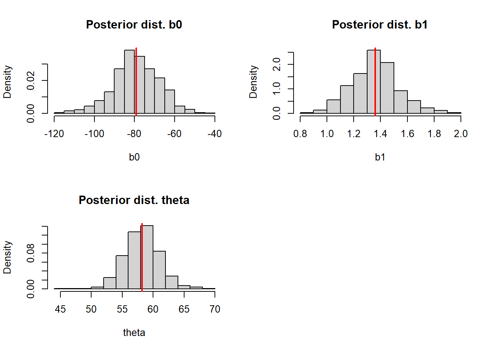
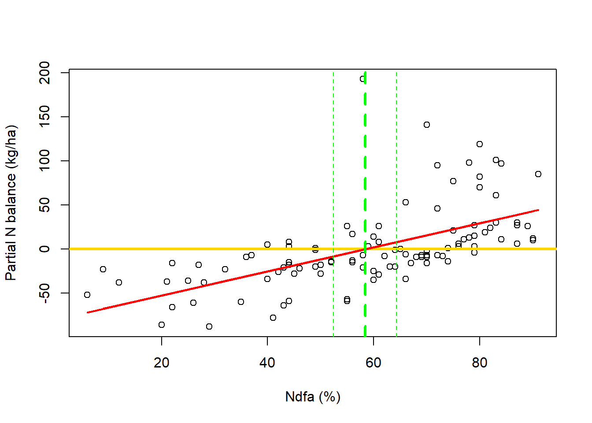
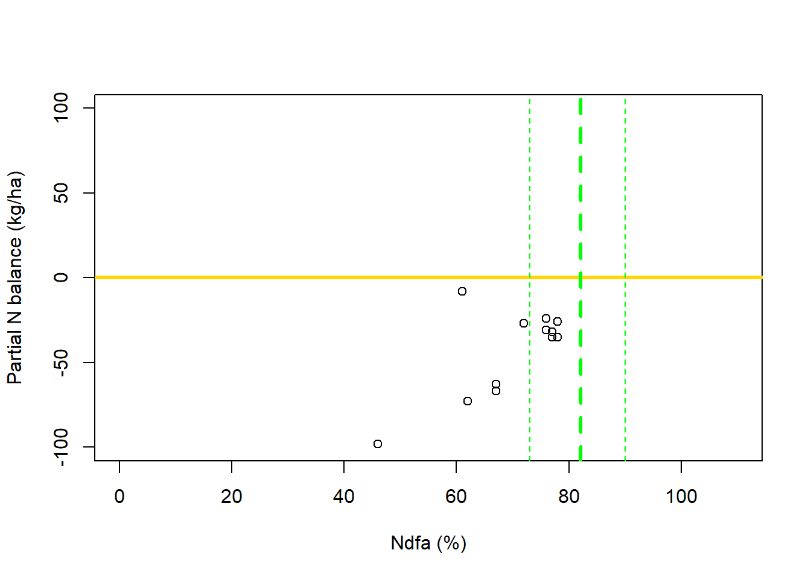

Welcome to day 1!
In this workshop, we will try to mix theory and R coding, but our main focus will be on understanding the why. All applications should be driven by thinking first.
We will follow a step-wise structure:
Day 1: Linear models
Day 2: Non-linear models
Day 3: Bayesian non-linear models
More importantly, don’t panic! We will be learning together, slowly. We do not expect you to come into the workshop (or leave it) knowing everything.
Our goal is to provide an immersion into the topic and some initial guidance, so you can move forward with your own projects and continued learning.
Please feel free to stop me and ask questions at any time. I will answer to the best of my knowledge, and if I don’t know the answer, either Trevor will jump in or I will make sure to come back to you with a clear explanation later.
Linear models
Outline:
What is and what isn’t a linear model
Estimation and Inference: A linear model example using:
Loss function approach
Likelihood-based approach
Bayesian approach
When Bayesian improves
Practice questions
Fixation day 1
Pre-day 2
What is day 1 about?
Understanding linear models and estimation conceptually
1. What is and what isn’t a linear model
Recap on linear models
Recall the famous intercept-and-slope model, written in the “model equation form”1:
\[ y_i = \beta_0 + x_i\beta_1 + \varepsilon_i \]
Here we have the observed value of the \(i\)th observation (\(y_i\)), the intercept (\(\beta_0\)), representing the level of \(y\) when \(x\) = 0, the slope (\(\beta_1\)), which for a continuous \(x_i\), it represents the change in \(y\) given a one unit change in \(x\), and the residual (\(\varepsilon_i\)) that represents the different between the observation and the model line for each point.

Now, what makes a model linear?
Other examples of linear models are:
Polynomial regression:
Extend the linear regression in a way that the relationship between the predictors and the response is non-linear. A polynomial function is a special case of base function2.
\[ y_i = \beta_0 + \beta_1x_i+\beta_2x_i^2+\varepsilon_i \]

Regression splines:
In this type of model, \(x\) is partitioned by \(K\) points and within each space between these points, a polynomial model is fitted. Splines are a special case of piecewise degree-d polynomial, in which a constraint ensures that it is continuous. This means that at each “knot” (\(K\)), that define a breaks in \(x\), the line remains continuous. Simple piecewise polynomial regression exist, but they do not ensure this continuity.
\[ y_i = \beta_0 + \beta_1b_1(x_i) + \beta_2b_{K + 2}(x_i) + \varepsilon_i \]

Yes, this is linear!
Linearity is about the geometry of the parameter space, not about the shape of the curve in the data.
Shape \(\neq\) Linearity
Linear models \(\neq\) Simplicity
Simple rule: A model is linear if:
All unknown parameter only multiplies known quantities
All parameters are added together
All parameters are outside nonlinear functions.
\[ \mathbf{\hat{y}} = \sum_i\beta_ib_i(\mathbf{x}) \]
What about nonlinear models?
In simple terms, in nonlinear models, parameters are inside nonlinear functions.
Example:
\[ y_i = \beta_0*e^{\beta_1x_i} + \varepsilon_i \]

Checklist:
All unknown parameters only multiply known quantities? X -> \(\beta_0*e^{\beta_1x_i}\)
All parameters are added together? X -> \(\beta_0*e^{\beta_1x_i}\)
All parameters are outside nonlinear functions? X -> \(e^{\beta_1x_i}\)
How do we work with non-linear models?
Fit it as it is.
Linearization.
- More about both on day 2!
2. Estimation and Inference: A linear model example
Estimation: Getting actual numbers for the model parameters
Inference: Making sense of these numbers regarding the population being studied
Example: Understanding nitrogen balance in grain legumes
Details from Palmero et al. 2024
A simple intercept-slope linear model:
\[ y_i = \beta_0 + \beta_1x_i + \varepsilon \]
in which:
\(y_i\) represents the proportion (%) of nitrogen (N) derived from the atmosphere (Ndfa)
\(x_i\) represents the partial N balance (fixed N - removed N by grains) in kg/ha
The research question: Which Ndfa (\(y_i\)) leads to a neutral N balance (\(x_i = 0\))?
Code

I. Loss function approach
How does it works?

Loss function: How we calculate the distance between observed and predicted by the model.
- Several different options, the most famous: Least Square - \(\sum_{i = 1}^n(y_i - \beta_0 - \beta_1x_i)^2\)
This approach produces a line of best fit based on values for \(\beta_0\) and \(\beta_1\) that minimizes the distance.
For our example:
Fit a simple intercept-slope linear model to data using least squares and calculate the value of Ndfa that is needed to achieve a neutral N balance (\(\theta\)).
\[ y_i = \beta_0 + \beta_1x_i + \varepsilon_i \]
Theta is a derived quantity3 calculated as:
\[ Ndfa = -\frac{\beta_0}{\beta_1} \]
Code
## [1] 58.26843Visual representation of our line of best fit and \(\theta\):
Code

II. Likelihood-based approach
How does it work?
Instead of minimizing the distance, we now maximize the likelihood function.
The question is: “If these parameter values were true, how plausible is the data I actually observe?”.
Likelihood is about explaining the data you already have4.
No more a line of best fit, but an expectation!
To define a likelihood, we must introduce assumptions about how the data were generated. We make a distributional assumption for the random error term:
\[ \varepsilon_i \sim N(0, \sigma^2) \]
- This distributional assumption is about how the data is generated, it means we believe the deviations between the observed data and the model predictions arise from a normal distribution with mean 0 and variance \(\sigma^2\).

For our example:
Fit a simple intercept-slope linear model to data using least squares and calculate the value of Ndfa that is needed to achieve a neutral N balance (\(\theta\)).
\[ y_i = \beta_0 + \beta_1x_i + \varepsilon_i \\ \varepsilon_i \sim N(0, \sigma^2) \]
Code
library(nlme)
# Fit the model
m2 <- gls(PartNbalance ~ Ndfa, data = df_a, method = "ML")
# Ndfa to achieve neutral N balance
b0hat_ml <- as.numeric(coef(m2)[1]) # extract the intercept
b1hat_ml <- as.numeric(coef(m2)[2]) # extract the slope
thetahat_ml <- -b0hat_ml/b1hat_ml # calculate theta
thetahat_ml## [1] 58.26843Here we can construct confidence intervals by approximating the standard errors using delta method5.
Code
## [1] 52.88317 63.65370Visual representation of our expected values and \(\hat{\theta}\):
Code
plot(df_a$Ndfa, df_a$PartNbalance, xlab = "Ndfa (%)", ylab = "Partial N balance (kg/ha)")
abline(a = 0, b = 0, col = "gold", lwd = 3)
abline(m2, col = "red", lwd = 3)
abline(v = thetahat_ml, lwd = 3, lty = 2, col = "green")
abline(v = theta_ci[1], lwd = 1, lty = 2, col = "green")
abline(v = theta_ci[2], lwd = 1, lty = 2, col = "green")
What are we gaining here?
More complexity;
Uncertainty around estimated \(\hat{\theta}\);
We could also explore uncertainty for the expected value (red line).
III. Bayesian approach
How does it work?
Now, we do not focus on the most likely value of the parameter, we focus on it’s whole distribution, all values it can assume.
In this approach, we have additional assumptions concerning our unknown parameters.
Through Bayesian approach, it is very straight forward to account for and explicitly demonstrate uncertainty.
We use prior knowledge about the system, to inform our parameters to be estimated.
Bayesian estimation does not contradict Maximum Likelihood, it extends it!

For our example:
Fit a simple intercept-slope linear model to data using least squares and calculate the value of Ndfa that is needed to achieve a neutral N balance (\(\theta\)).
\[ y_i = \beta_0 + \beta_1x_i + \varepsilon_i \\ \varepsilon_i \sim N(0, \sigma^2)\]
We will re-write this model, using a different notation:
\[
\mathbf{y} \sim N(\boldsymbol{\beta_0} + \boldsymbol{\beta_1}\mathbf{x}, \boldsymbol{\sigma}^2) \\ \boldsymbol{\beta_0} \sim N(0, 10^6) \\ \boldsymbol{\beta_1} \sim N(0, 10^6) \\ \boldsymbol{\sigma} \sim Gamma(2.5, 0.05)
\]
This notation helps to clearly identify our assumptions!
Code
library(rjags)
library(coda)
set.seed(2026)
y <- df_a$PartNbalance
x <- df_a$Ndfa
# JAGS code
data_line <- list("y" = y, "x" = x, "N" = nrow(df_a))
initials <- list(
list("b0" = 0.1, "b1" = 0.1, "sigma" = 0.1)
)
model_string <- "model {
# Likelihood
for(i in 1:N){
y[i] ~ dnorm(mu[i], tau)
mu[i] <- b0 + b1*(x[i])
}
# Priors
b0 ~ dnorm(0, 1/10^6)
b1 ~ dnorm(0, 1/10^6)
sigma ~ dgamma(2.5, 0.05)
# Derived quantity
theta <- -b0/b1
tau <- 1/(sigma^2)
}"
m3 <- jags.model(textConnection(model_string), inits = initials, data = data_line, n.chains = 1)
update(m3, n.iter = 1000)
samples <- coda.samples(m3, variable.names = c("b0", "b1", "tau", "theta", "sigma"), n.iter = 1000)
#summary(samples)
#plot(samples)
# Extract draws and calculate expected line
draws <- as.matrix(samples)
b0_hat <- mean(draws[, "b0"])
b1_hat <- mean(draws[, "b1"])
pred_mean <- b0_hat + b1_hat*xCode
par(mfrow = c(2, 2))
hist(draws[, "b0"], freq = FALSE, main = "Posterior dist. b0", xlab = "b0")
abline(v = mean(draws[, "b0"]), lwd = 2, col = "red")
hist(draws[, "b1"], freq = FALSE, main = "Posterior dist. b1", xlab = "b1")
abline(v = mean(draws[, "b1"]), lwd = 2, col = "red")
hist(draws[, "theta"], freq = FALSE, main = "Posterior dist. theta", xlab = "theta")
abline(v = mean(draws[, "theta"]), lwd = 2, col = "red")
par(mfrow = c(1, 1))
Code
theta_CrI <- quantile(draws[, "theta"], c(0.025, 0.975))
plot(df_a$Ndfa, df_a$PartNbalance, xlab = "Ndfa (%)", ylab = "Partial N balance (kg/ha)")
abline(a = 0, b = 0, col = "gold", lwd = 3)
lines(df_a$Ndfa, pred_mean, col = "red", lwd = 2)
abline(v = mean(draws[, "theta"]), lwd = 3, lty = 2, col = "green")
abline(v = theta_CrI[1], lwd = 1, lty = 2, col = "green")
abline(v = theta_CrI[2], lwd = 1, lty = 2, col = "green")
3. Why use Bayesian?
Code

You should be concerned about uncertainty here! Let’s try a likelihood approach:
Code
# Fit the model
m4 <- gls(PartNbalance ~ Ndfa, data = df_b, method = "ML")
# Ndfa to achieve neutral N balance
b0hat_ml2 <- as.numeric(coef(m4)[1]) # extract the intercept
b1hat_ml2 <- as.numeric(coef(m4)[2]) # extract the slope
thetahat_ml2 <- -b0hat_ml2/b1hat_ml2 # calculate theta
theta_se2 <- deltamethod(~ -x1/x2, mean = coef(m4), cov = vcov(m4))
theta_ci2 <- c(thetahat_ml2-1.96*theta_se2, thetahat_ml2+1.96*theta_se2)
plot(df_b$Ndfa, df_b$PartNbalance, xlim = c(0, 110), ylim = c(-100, 100), xlab = "Ndfa (%)", ylab = "Partial N Balance (kg/ha)")
abline(a = 0, b = 0, lwd = 3, col = "gold")
abline(m4, lwd = 3, col = "red")
abline(v = thetahat_ml2, lwd = 3, lty = 2, col = "green")
abline(v = theta_ci2[1], lwd = 1, lty = 2, col = "green")
abline(v = theta_ci2[2], lwd = 1, lty = 2, col = "green")
How about Bayesian?
Code
set.seed(2026)
y <- df_b$PartNbalance
x <- (df_b$Ndfa)/100
# JAGS code
data_line <- list("y" = y, "x" = x, "N" = nrow(df_b))
initials <- list(
list("theta" = 0.1, "b1" = 0.1, "sigma" = 0.1)
)
model_string <- "model {
# Likelihood
for(i in 1:N){
y[i] ~ dnorm(mu[i], tau)
mu[i] <- -b1*theta + b1*(x[i])
}
# Priors
b1 ~ dgamma(1.6, 0.8)
theta ~ dbeta(62.52, 14.06)
sigma ~ dgamma(2.5, 0.05)
# Derived quantity
b0 <- -b1*theta
tau <- 1/(sigma^2)
}"
m5 <- jags.model(textConnection(model_string), inits = initials, data = data_line, n.chains = 1)
update(m5, n.iter = 1000)
samples2 <- coda.samples(m5, variable.names = c("b0", "b1", "tau", "theta", "sigma"), n.iter = 1000)
#summary(samples2)
#plot(samples2)
# Extract draws and calculate expected line
draws2 <- as.matrix(samples2)
theta_hat2 <- mean(draws2[, "theta"])
b1_hat2 <- mean(draws2[, "b1"])
pred_mean2 <- b1_hat2* + b1_hat2*xCode
theta_CrI2 <- quantile(draws2[, "theta"], c(0.025, 0.975))
plot(df_b$Ndfa, df_b$PartNbalance, xlab = "Ndfa (%)", ylab = "Partial N balance (kg/ha)", ylim = c(-100, 100), xlim = c(0, 110))
abline(a = 0, b = 0, col = "gold", lwd = 3)
#lines(df_b$Ndfa, pred_mean2, col = "red", lwd = 2)
abline(v = (mean(draws2[, "theta"]))*100, lwd = 3, lty = 2, col = "green")
abline(v = (theta_CrI2[1])*100, lwd = 1, lty = 2, col = "green")
abline(v = (theta_CrI2[2])*100, lwd = 1, lty = 2, col = "green")
Why?
Deficient information about \(\theta\) in this dataset.
Bayesian offers the opportunity to utilize prior information and a constraint \(\hat{\theta}\).
We treat \(\theta\) as a random variable.
Similar assumptions across approaches.
4. Practice for day 1
- Sample code is provided for some questions. Code used on the class examples can also be used to work on this practice.
Fixation day 1
I. Using the field pea and white lupine data, experiment fitting the simple intercept-slope linear model (\(y_i = \beta_0 + \beta_1*xi + \varepsilon_i\)) using the likelihood approach.
Code
II. Calculate the derived quantity \(\hat{\theta}\), and use delta method and bootstrap to obtain confidence intervals. Compare the intervals between the two datasets.
- Bootstrap will be revisited on day 3, please, have a look at it beforehand!
Code
# Bootstrap for field pea (fp)
library(nlme) # gls function for model fit
set.seed(2026) # As we are working with a random (stochastic) process, we need to set seed to be able to reproduce the results
ite <- 1000 # How many iterations (repetitions of the process) we will have
n <- nrow(fp) # Sample size to be collected (= df size)
theta.save <- seq(0, ite-1) # Save theta calculated for each sample
# Custom bootstrap algorithm
for(i in 1:ite){
sample <- fp[sample(nrow(fp), n, replace = TRUE), ]
fit <- gls(PartNbalance ~ Ndfa, data = sample, method = "ML")
theta <- -coef(fit)[1]/coef(fit)[2]
theta.save[i] <- theta
}
# Plot the bootstrap distribution
hist(theta.save, freq = FALSE, main = "Bootstrap distribution of theta", xlab = "theta")
# 95% CI
quantile(theta.save, probs = c(0.025, 0.975))Steps:
Sample n elements with replacement from the original data
For every sample calculate the desired statistic (here \(\theta\))
Repeat steps 1 and 2 n times (iterations = ite) and save the calculated statistic
Plot the calculated statistics which forms the bootstrap distribution
Using the bootstrap distribution of desired statistics calculate the 95% CI
Pre-day 2 - Non-linear models
I. Fit an logistic model to the data of plant disease progress over time in “nonlin.csv”.
Code
I.a. Use linearization to fit a linear model for 2024. We will use a logit transformation:
\[ logit(y_i) = \beta_0 + \beta_1*x_i + \varepsilon_i \]
Where \(\beta_1 \sim r\) from the non-linear form.
Code
# Example for 2024
# For this, we assume K = 1
nl_24$l_sev <- (nl_24$p_sev/(1-nl_24$p_sev))
# Fit the linear model to the logit transformed y
m1 <- lm(l_sev ~ time, data = nl_24)
# Make predictions
logit_pred <- data.frame(
time = seq(min(nl_24$time), max(nl_24$time), 1))
logit_pred$pred <- predict(m1, newdata = logit_pred)
# Plot predictions
plot(nl_24$time, nl_24$l_sev, ylab = "Logit(y)", xlab = "Days", ylim = c(-3, 19))
lines(logit_pred$time, logit_pred$pred, lwd = 3, col = "red")I.b. Use the nls function. First, fit for the year of 2024, then, do it for the year of 2023. Make a plot with predictions. Save models for the next question.
\[ y_i = \frac{K}{1 + (\frac{K - y_0}{y_0})e^{-rt_i}} + \varepsilon_i \]
Code
# Example for 2024
# Fit the logistic model
m2 <- nls(p_sev ~ K/(1 + ((K-y0)/y0)*exp(-r*time)), data = nl_24, start = list(K = 0.7, y0 = 0.001, r = 0.2))
# Predict using the logistic curve
nl_pred <- data.frame(
time = seq(min(nl_24$time), max(nl_24$time), 1))
nl_pred$pred <- predict(m2, newdata = nl_pred)
# Plot predictions
plot(nl_24$time, nl_24$p_sev, ylab = "Severity (prop.)", xlab = "Days", ylim = c(-0.1, 1))
lines(nl_pred$time, nl_pred$pred, lwd = 3, col = "red")II. Extract model parameters. Check the parameter meaning below. Check the Wald CI. Are values making sense?
Disease severity: Percentage of tissue area affected by the disease (in this case, percentage of the leaf area affected)
Logistic disease progress curve model parameter meaning:
\(K\) - Maximum disease potential - Maximum severity level
\(r\) - Disease rate of growth - How fast it grows
\(y_0\) - Initial disease level
Code
summary(m2) # Overall model summary
# Example - For K:
## Extract the estimated value
K <- as.numeric(coef(m2)[1])
## Calculate Wald Confidence Interval for the parameter estimate
K_sd <- sqrt(vcov(m2)[1])
K_lb <- K-1.96*K_sd # CI Lower
K_ub <- K+1.96*K_sd # CI Upper
# Notes for you:
## nls in R uses least squares, a loss function approach. Recall: Minimize the loss function.
## To get CI here we are making additional assumptions that we do not make for loss function approach: iid normal residuals.
## This is possible because LS = ML under iid Normal errors with constant variance.
## Why 1.96? It represents the 97.5th percentile of the std N distribution.III. Try fitting a polynomial to this data. Does the predicted curve make sense visually?
Code
# Example for 2024
# Fit the model
m3 <- lm(p_sev ~ poly(time, degree = 3), data = nl_24)
# Make predictions
poly_pred <- data.frame(
time = seq(min(nl_24$time), max(nl_24$time), 1))
poly_pred$pred <- predict(m3, newdata = poly_pred)
# Plot predictions
plot(nl_24$time, nl_24$p_sev, ylab = "Severity (prop.)", xlab = "Days", ylim = c(-0.1, 1))
lines(poly_pred$time, poly_pred$pred, lwd = 3, col = "red")About the parameters, are they still carrying biological meaning? How fast is the disease growing?
\(\frac{dy}{dt} = \mathbf{ry}(1-\frac{\mathbf{y}}{\mathbf{K}})\)↩︎
Wald CI measure local uncertainty (around the parameter estimate) and not at the whole parameter space (all values it could assume - global), therefore, they might be more optimistic than global CI. Bootstrap or Bayesian approach would provide more closely a global uncertainty measure once they explore a broader region of the parameter space.↩︎
Derived quantities are functions of model parameters↩︎
Finding the parameter values under which the observed data are most plausible according to the assumed data-generating process.↩︎
The Delta Method approximates the uncertainty of a transformed estimator (derived quantity), assuming it was originally approximately normal.↩︎